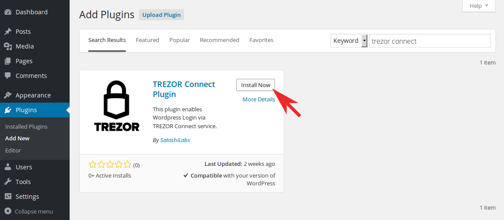
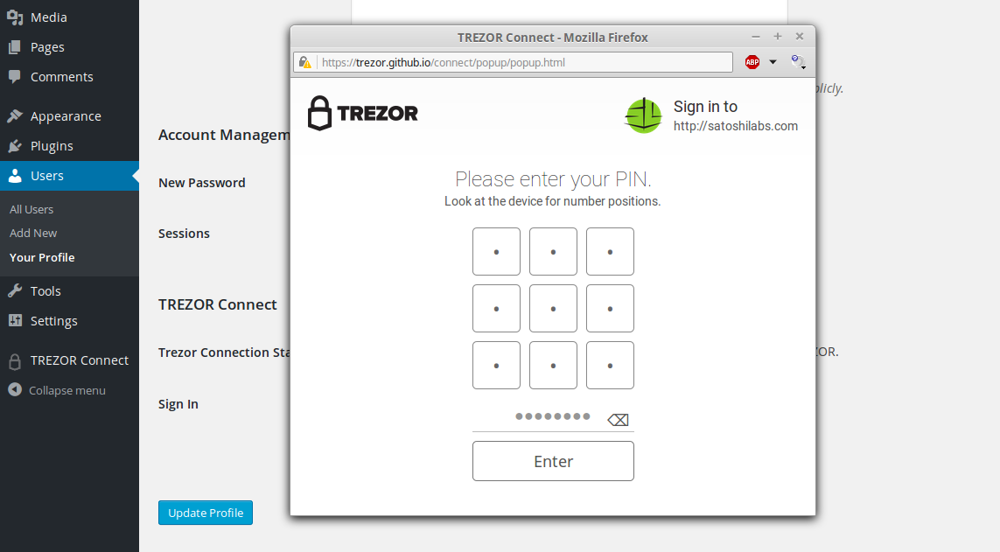

Wordpress¶
What is Wordpress?¶
Wordpress is web software you can use to create a website or blog.
Thanks to TREZOR Connect Plugin by SatoshiLabs, administrators can now install Sign in with TREZOR feature with just a few clicks and enjoy passwordless and secure authentication to their Wordpress backend.

TREZOR User Manual¶
Setting up Wordpress Plugin¶
After logging into your admin Wordpress account
- Go to Plugins section, click on Add New
- Search for TREZOR Connect Plugin and install it
- After successful installation, activate the plugin
- Go to TREZOR Connect section to set image for signing window
Now any site administrator will be able to pair his TREZOR with his Wordpress account.
Pairing TREZOR with account¶
Before you can use your TREZOR for login, you have to pair it with your Wordpress account.
- Under Users section, click on Your profile
- Scroll down to TREZOR Connect and click on Sign in with TREZOR
- Connect your TREZOR, confirm the action on your device and enter your PIN
- Finish the pairing by entering your Wordpress password
From now, you will be able to Log in with TREZOR and never again worry that your password might be stolen by a keylogger. Go ahead, log out and try it!
Unlinking TREZOR¶
In case you ever need to unlink your TREZOR
- Under Users section, click on Your profile
- Scroll down to TREZOR Connect and click on Unlink TREZOR
- Confirm the action by entering your Wordpress password